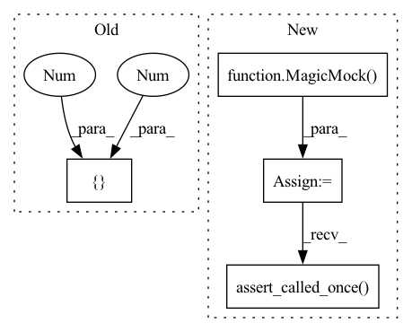

Pattern ID :3820

Before Change
def test_lower_bounds(model):
Check the lower bounds are correctly set
model.bounds = {"x": [-1, 1], "y": [-1, 1]}
model._lower = None
assert (Model.lower_bounds.__get__(model) == [-1, -1]).all()
After Change
def func():
model._lower = np.array([-1, -1])
model._set_upper_lower = MagicMock(side_effect=func)
model._lower = None
bounds = Model.lower_bounds.__get__(model)
model._set_upper_lower.assert_called_once()
np.testing.assert_array_equal(bounds, np.array([-1, -1]))
def test_upper_bounds(model):
In pattern: SUPERPATTERN
Frequency: 3
Non-data size: 4
Instances
Fragment ID: 14546191
Project Name: mj-will/nessai
Commit Name: 6deebb0a5c5fe77ee3c35152a6623594feeb69bb
Time: 2022-07-07
Author: m.williams.4@research.gla.ac.uk
File Name: tests/test_model.py
M Class Name: AnonimousClass
N Class Name: AnonimousClass
M Method Name: test_lower_bounds(1)
N Method Name: test_lower_bounds(1)
M Parent Class:
N Parent Class:
M File Name: tests/test_model.py
N File Name: tests/test_model.py
M Start Line: 151
M End Line: 153
N Start Line: 162
N End Line: 166
'>
Before Change
def test_upper_bounds(model):
Check the upper bounds are correctly set
model.bounds = {"x": [-1, 1], "y": [-1, 1]}
model._upper = None
assert (Model.upper_bounds.__get__(model) == [1, 1]).all()
After Change
def func():
model._upper = np.array([1.0, 1.0])
model._set_upper_lower = MagicMock(side_effect=func)
model._upper = None
bounds = Model.upper_bounds.__get__(model)
model._set_upper_lower.assert_called_once()
np.testing.assert_array_equal(bounds, np.array([1, 1]))
def test_vectorised_likelihood_true(model):
'>
Fragment ID: 14546197
Project Name: mj-will/nessai
Commit Name: 6deebb0a5c5fe77ee3c35152a6623594feeb69bb
Time: 2022-07-07
Author: m.williams.4@research.gla.ac.uk
File Name: tests/test_model.py
M Class Name: AnonimousClass
N Class Name: AnonimousClass
M Method Name: test_upper_bounds(1)
N Method Name: test_upper_bounds(1)
M Parent Class:
N Parent Class:
M File Name: tests/test_model.py
N File Name: tests/test_model.py
M Start Line: 158
M End Line: 160
N Start Line: 174
N End Line: 178
'>
Before Change
poolsize = 10
drawsize = 5
names = ["x", "y"]
worst_point = np.array([1, 2])
worst_z = np.random.randn(1, n_dims)
worst_q = np.random.randn(1)
z = [
After Change
side_effect=[(a[:-1], b[:-1]) for a, b in zip(z, x)]
)
proposal.compute_acceptance = MagicMock(side_effect=[0.5, 0.8])
proposal.evaluate_likelihoods = MagicMock()
proposal.plot_pool = MagicMock()
proposal.convert_to_samples = MagicMock(
side_effect=lambda *args, **kwargs: args[0]
)
FlowProposal.populate(proposal, worst_point, N=10, plot=True)
proposal.forward_pass.assert_called_once_with(
worst_point, rescale=True, compute_radius=True,
)
proposal.radius.assert_called_once_with(worst_z, worst_q)
assert proposal.r == 1
draw_calls = [
call(2, r=1.0, N=5, fuzz=1.0, var=2.0),
call(2, r=1.0, N=5, fuzz=1.0, var=2.0),
]
proposal.draw_latent_prior.assert_has_calls(draw_calls)
rejection_calls = [
call(z[0], worst_q), call(z[1], worst_q), call(z[2], worst_q)
]
proposal.rejection_sampling.assert_has_calls(rejection_calls)
proposal.plot_pool.assert_called_once()
proposal.convert_to_samples.assert_called_once()
np.testing.assert_array_equal(
proposal.convert_to_samples.call_args[0][0],
proposal.x
)
assert proposal.convert_to_samples.call_args[1]["plot"] is True
assert proposal.population_acceptance == (10 / 15)
assert proposal.populated_count == 2
assert proposal.populated is True
assert proposal.x.size == 10
if check_acceptance:
proposal.compute_acceptance.assert_called()
proposal.evaluate_likelihoods.assert_called_once()
assert proposal.approx_acceptance == [0.4, 0.5]
assert proposal.acceptance == [0.7, 0.8]
else:
proposal.compute_acceptance.assert_not_called()
'>
Fragment ID: 14546195
Project Name: mj-will/nessai
Commit Name: 5c149b91ae309c0a11a770e22f363439053c17f4
Time: 2021-11-12
Author: michaeljw1@googlemail.com
File Name: tests/test_proposal/test_flowproposal/test_flowproposal_population.py
M Class Name: AnonimousClass
N Class Name: AnonimousClass
M Method Name: test_populate(2)
N Method Name: test_populate(1)
M Parent Class:
N Parent Class:
M File Name: tests/test_proposal/test_flowproposal/test_flowproposal_population.py
N File Name: tests/test_proposal/test_flowproposal/test_flowproposal_population.py
M Start Line: 294
M End Line: 319
N Start Line: 289
N End Line: 388